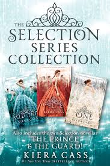
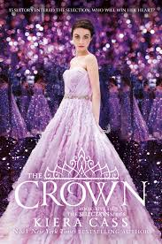

| The Selection is a young adult novel by Kiera Cass first published on April 14, 2012 by HarperCollins. It is the first in a five-book series, followed by The Elite (2013), The One (2014), The Heir [1] (2015) and The Crown (May 2016). The last two take place twenty years after the events in the first three. In addition, four spin-off novellas were released. The first two, The Prince and The Guard, are narrated from the point of view of two supporting characters. The Queen and The Favorite are prequels, focusing on two other supporting characters in the main series.[2] All four novels were collected into one volume Happily Ever After, including bonus content and epilogues. |  |
| In a futuristic world where society is divided into castes, with Ones as the most prosperous, consisting of royals and elites, and Eights who are mostly orphans, drug users, handicapped, and unemployable. America is a Five, the "artist" caste (e.g. musicians, artists, actors, dancers, etc.). Since their prosperity depends on their desirability, Fives live a lower-class life. America, however, doesn't care, because she loves entertaining, especially with a violin. The prince of Illéa, Maxon Schreaves, announces that he is following his father's footsteps by holding the Selection, a competition for the prince's hand in marriage and the crown. Despite pressure from her mother, America has no interest in entering the competition, because she already has Aspen, her secret boyfriend, and next-door neighbor. |  |
| In a futuristic world where society is divided into castes, with Ones as the most prosperous, consisting of royals and elites, and Eights who are mostly orphans, drug users, handicapped, and unemployable. America is a Five, the "artist" caste (e.g. musicians, artists, actors, dancers, etc.). Since their prosperity depends on their desirability, Fives live a lower-class life. America, however, doesn't care, because she loves entertaining, especially with a violin. The prince of Illéa, Maxon Schreaves, announces that he is following his father's footsteps by holding the Selection, a competition for the prince's hand in marriage and the crown. Despite pressure from her mother, America has no interest in entering the competition, because she already has Aspen, her secret boyfriend, and next-door neighbor. |